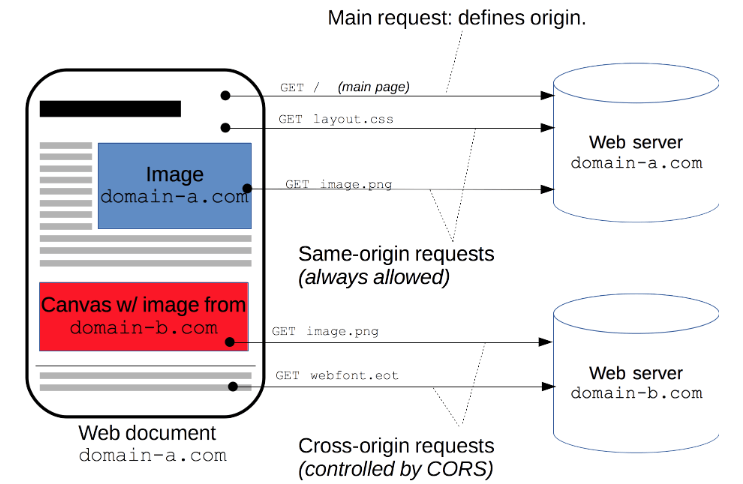

Vue项目中如何解决跨域问题？
参考答案
解决跨域的方法有很多，下面列举了三种：
- JSONP
- CORS
- Proxy
而在vue项目中，我们主要针对CORS或Proxy这两种方案进行展开
CORS
CORS （Cross-Origin Resource Sharing，跨域资源共享）是一个系统，它由一系列传输的HTTP头组成，这些HTTP头决定浏览器是否阻止前端 JavaScript 代码获取跨域请求的响应
CORS 实现起来非常方便，只需要增加一些 HTTP 头，让服务器能声明允许的访问来源
只要后端实现了 CORS，就实现了跨域

以 koa框架举例
添加中间件，直接设置Access-Control-Allow-Origin请求头
app.use(async (ctx, next)=> {
ctx.set('Access-Control-Allow-Origin', '*');
ctx.set('Access-Control-Allow-Headers', 'Content-Type, Content-Length, Authorization, Accept, X-Requested-With , yourHeaderFeild');
ctx.set('Access-Control-Allow-Methods', 'PUT, POST, GET, DELETE, OPTIONS');
if (ctx.method == 'OPTIONS') {
ctx.body = 200;
} else {
await next();
}
})ps: Access-Control-Allow-Origin 设置为*其实意义不大，可以说是形同虚设，实际应用中，上线前我们会将Access-Control-Allow-Origin 值设为我们目标host
Proxy
代理（Proxy）也称网络代理，是一种特殊的网络服务，允许一个（一般为客户端）通过这个服务与另一个网络终端（一般为服务器）进行非直接的连接。一些网关、路由器等网络设备具备网络代理功能。一般认为代理服务有利于保障网络终端的隐私或安全，防止攻击
方案一
如果是通过vue-cli脚手架工具搭建项目，我们可以通过webpack为我们起一个本地服务器作为请求的代理对象
通过该服务器转发请求至目标服务器，得到结果再转发给前端，但是最终发布上线时如果web应用和接口服务器不在一起仍会跨域
在vue.config.js文件，新增以下代码
amodule.exports = {
devServer: {
host: '127.0.0.1',
port: 8084,
open: true,// vue项目启动时自动打开浏览器
proxy: {
'/api': { // '/api'是代理标识，用于告诉node，url前面是/api的就是使用代理的
target: "http://xxx.xxx.xx.xx:8080", //目标地址，一般是指后台服务器地址
changeOrigin: true, //是否跨域
pathRewrite: { // pathRewrite 的作用是把实际Request Url中的'/api'用""代替
'^/api': ""
}
}
}
}
}通过axios发送请求中，配置请求的根路径
axios.defaults.baseURL = '/api'方案二
此外，还可通过服务端实现代理请求转发
以express框架为例
var express = require('express');
const proxy = require('http-proxy-middleware')
const app = express()
app.use(express.static(__dirname + '/'))
app.use('/api', proxy({ target: 'http://localhost:4000', changeOrigin: false
}));
module.exports = app方案三
通过配置nginx实现代理
server {
listen 80;
# server_name www.josephxia.com;
location / {
root /var/www/html;
index index.html index.htm;
try_files $uri $uri/ /index.html;
}
location /api {
proxy_pass http://127.0.0.1:3000;
proxy_redirect off;
proxy_set_header Host $host;
proxy_set_header X-Real-IP $remote_addr;
proxy_set_header X-Forwarded-For $proxy_add_x_forwarded_for;
}
}在Vue项目中，解决跨域问题通常采用CORS（跨域资源共享）或Proxy（代理）两种方法。
CORS（跨域资源共享）
CORS是一种机制，它允许服务器声明哪些网站可以访问哪些资源。通过在服务器端设置特定的HTTP头部，可以允许或拒绝跨域请求。
Proxy（代理）
代理是一种网络服务，它可以将请求转发到目标服务器，并转发响应给前端。
Vue CLI中通过Webpack配置代理：
- 在
vue.config.js中配置开发服务器（devServer）。 - 设置代理规则，将特定的URL前缀（如
/api）代理到目标服务器。 - 在前端项目中配置
axios的默认基础URL。
module.exports = {
devServer: {
host: '127.0.0.1',
port: 8084,
open: true,
proxy: {
'/api': {
target: 'http://xxx.xxx.xx.xx:8080',
changeOrigin: true,
pathRewrite: {
'^/api': '' // 重写路径，去掉代理前缀
}
}
}
}
};通过Nginx配置代理：
- 定义一个服务器块。
- 设置监听端口和主机名。
- 在
location块中设置代理规则。
server {
listen 80;
location / {
root /var/www/html;
index index.html index.htm;
try_files $uri $uri/ /index.html;
}
location /api {
proxy_pass http://127.0.0.1:3000;
proxy_redirect off;
proxy_set_header Host $host;
proxy_set_header X-Real-IP $remote_addr;
proxy_set_header X-Forwarded-For $proxy_add_x_forwarded_for;
}
}